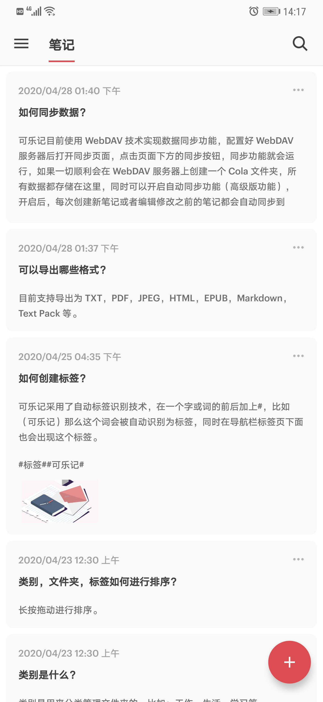
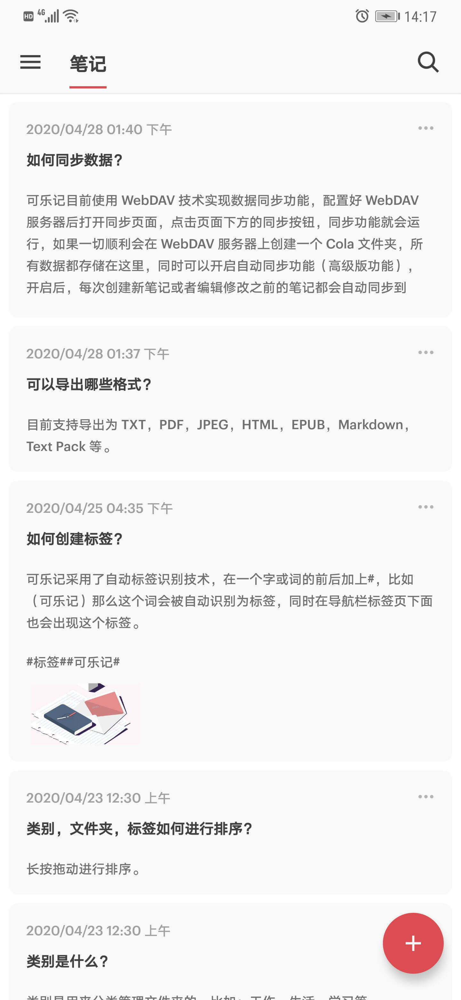

OneJotter
重新爱上你的笔记
OneJotter
重新爱上你的笔记
可乐记「OneJotter」是一个极简风格设计的笔记产品，适合笔记记录和散文写作，它附带了一个功能丰富的扩展键盘和一些当下流行的主题，既可以作为纯文本编辑器使用又可以保存富媒体样式的笔记，同时还支持 Markdown 格式的编辑及预览。

 

搜索，同步，合并，打印，格式化笔记，通知栏创建笔记，编辑 Markdown 格式的笔记及预览，富媒体样式与 Markdown 格式自由转换，备份，还原笔记，导入，导出笔记等。
支持插入特殊字符，照片，视频，文件，素绘，粗体，斜体，下划线，删除线，水平分割线，清单，列表，引用，代码，链接，日期等，还可以撤销，重做，段落上移，下移，缩进，取消缩进。
支持 Google Drive，Microsoft OneDrive，WebDAV Server 等多种网络同步与存储方式。
可以导出为 TXT，JPEG， PDF，EPUB，HTML，Markdown，TextPack 等多种格式的笔记，支持快速分享到其它应用。
快速创建笔记，高效编辑分享。